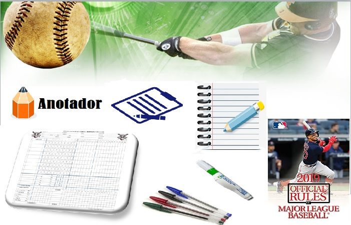
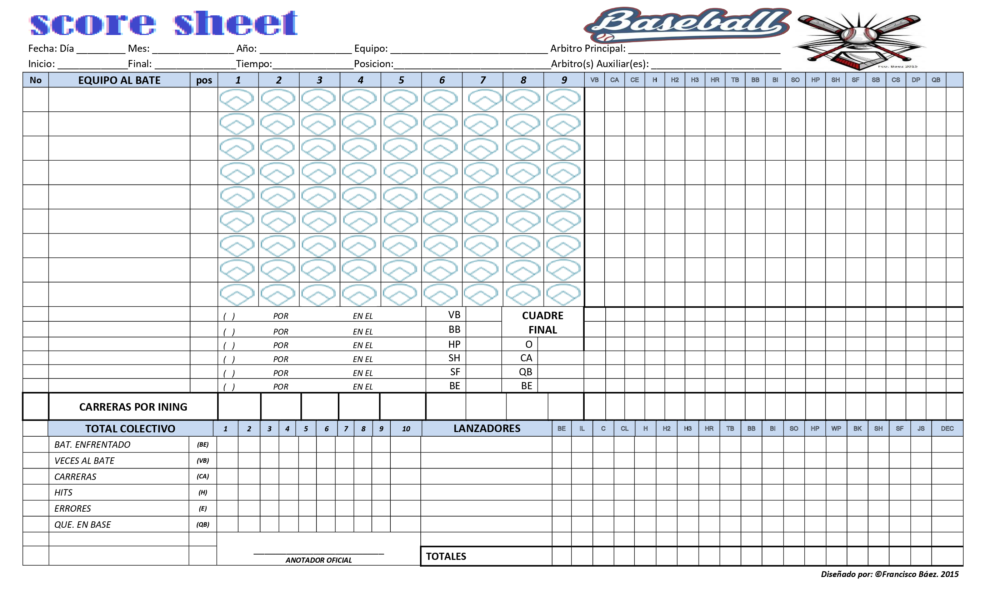
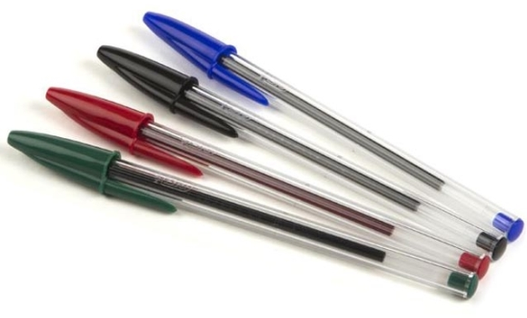

Herramientas del Anotador
Como en todo trabajo, servicio u labor que vallamos a realizar siempre necesitamos de una conjuntos de herramientas para realizar dicha tarea, es por ello que te presento es esta post las herramientas más importantes y esenciales que siempre debe llevar consigo un buen anotador.
- Regla de anotación de Beisbol
- Hoja de anotación de Beisbol
- Libreta de apuntes y hojas sin líneas
- Lápiz de corrector
- Lapiceros de tinta de colores: Azul, Rojo, Verde y Negro

Regla de Anotación
El béisbol es un juego donde intervienen muchos factores, pero todos deben estar sujetos a un conjunto de reglas para que todos puedan llevar a cabo un juego con éxito. Es por ello que también en anotador oficial necesita de un conjunto de conocimientos los cuales deben estar estrechamente relacionados en la Regla de Anotación de Béisbol.
En la regla de Anotación se definen cada comportamiento u tratamiento que el anotador debe de realizar a la hora de tomar ciertas decisiones.
En cuanto a las decisiones a tomar cuando se anota existen 2 tipos: de reglas y de apreciación.
El primer tipo, como la palabra lo dice, están decretados en las reglas y, aunque a veces parezcan injustas, deben interpretarse y aplicarse como tal.
El otro tipo, las jugadas de apreciación, si bien es cierto que se basan en el “me parece”; no deben tomarse a la ligera, esa apreciación debe estar soportada de la misma manera por las reglas.
Hoja de Anotación
Es un instrumento ordenado sistemáticamente para registrar todas las incidencias ocurridas durante un juego de beisbol, así como también todos los registros individuales y colectivos de los jugadores y equipos participantes.
Libreta de Apuntes
Es de suma importancia que en nuestro día a día para persona este o trate de ser lo más organizado posible, por tal razón un Anotador Oficial de Beisbol también debe de estar listo y organizado adecuadamente. Llevar una agenda de trabajo u tareas marca una diferencia entre muchos y las libretas de apuntes son necesarias a la hora de tener que hacer cualquier informe, levantar una protesta, juego suspendidos entre otras cosas .

Lapiceros de Colores
La anotación de Beisbol requiere de un conjunto de habilidades y conceptos bien definidos y acorde con la regla de anotación, de igual manera posee un sistema de símbolos y abreviaturas que ayudan al entendimiento de cada juego plasmado en la hoja de anotación. Es por eso que existen varios colores para registrar y denotar las diferentes jugadas que se presentan durante el desarrollo de un juego de Beisbol.
Uso de los lapiceros segun sus colores
Lápiz de tinta negra
Es usado para registrar en la hoja de anotación todos los outs que son producidos por roletazo y elevado de fly en zona fair o foul en caso de algunos elevado.
- • Batazo de Force Out
- • Registrar el Line-Up
- • Totalizar la hoja
Lapiz de tinta azul
Todas las siguientes jugadas:
- • Errores de la defensa (E)
- • Fielder’s Choice (FC)
- • Ponches (K)
- • Robo de bases(SB)
- • Out robando base (CS)
- • Wild Pichers (WP)
- • Passed Ball (PB)
- • Balks (BK)
- • Doble play y triple play(DP o TP)
Lapicero de tinta roja
Es usado para anotar o registrar todos los batazos de hit.
- • Hit de una base (1B)
- • Hit de dos bases (2B)
- • Hit de tres bases (3B)
- • Hit de cuatro base(HR)
Lapicero de tinta verde
Es usado para registrar todas las jugadas que generan turnos no oficiales.
- • Bases por bolas (BB) Y (BI)
- • Hit by pitch (HP)
- • Fly de sacrificio (SF)
- • Toque de sacrificio (SH)
- • Interferencia del receptor (otorgar primera base al bateador) (INT)
Componentes
A continuación te presento los componentes fundamentales y esenciales que debe de conocer a fondo cualquier personalidad, para lograr convertirte en un anotador, ya sea como aficionado, para ayudar a un club de beisbol en particular o si más bien deseas ser un anotador a gran escala.
El Anotador Oficial
Es el encargado de llevar el registro de todas las jugadas de un juego de béisbol. Es la única autoridad que podrá tomar decisiones de criterio, tales como,
La Hoja de Anotación
Es un instrumento ordenado sistemáticamente para registrar todas las incidencias ocurridas durante un juego de beisbol, así como también todos...
Herramientas Usada
Aquí te presento las principales herramientas que debe de tener y conocer un anotador oficial de beisbol y cualquier anotador de afición al juego,
Simbologías Usada
No existe un estándar aprobado ni mucho menos registrado para anotar usando tales símbolos, pero si es de gran importancia emplear ciertos símbolos.
Ligas de Béisbol
Te presentamos algunas de las principales ligas de Béisbol de todo el continente y el mundo que utilizan un sistema de anotación tanto manual como de aplcación de software y que brindan una gran gama de estadísticas a todos sus usuarios de todos los niveles.


Nuestro Portfolio
En esta seccion presentamos algunas de las fotos e imagenes que hacen referencias a nuestro trabajos como anotador oficial de Beisbol, de hecho es importante ver la vella y el arte que se esconde destras de esta labor profesional.


{kind=link}
Testimonials
De manera fundamental es importante destacar La función primordial del anotador oficial que es la de llevar la anotación completa de un juego de beisbol, y por consiguientes tenemos a varios de los anotadores de latinoamerica expresando su testimonio sobre lo que conlleva ser un anotador de Beisbol.
 “Para este trabajo se necesita de mucha concentración, no perder un lanzamiento. Ver, más la experiencia que uno tiene, le permite saber lo que está pasando.”
“Para este trabajo se necesita de mucha concentración, no perder un lanzamiento. Ver, más la experiencia que uno tiene, le permite saber lo que está pasando.”


Arturo Santo Domingo
Primer Latino; Anotador Oficial - MLB
El Anotador es el responsable de plasmar lo sucedido en el terreno de juego, su decisiones se harán historia y por lo tanto se requiere de mucha objetividad.

Gil Reyes
Anotador Oficial (LVBP)
Cumplir con esta labor es un inmenso privilegio para quienes sentimos pasión por este deporte, debido a que nos permite estar en contacto directo con el juego de beisbol y formar parte del mismo.

Francsico Baez
Anotador Oficial (DSL & LIDOM)
El anotador oficial es el responsable de registrar, evaluar y otorgar en cada acción durante el juego apegado a lo que le faculta la regla de Beisbol.

Milton E. Reyes
Anotador Oficial (LIDOM)
En el juego de Béisbol todas las partes son muy importantes pero no hay dudas que el anotador es una pieza muy importante en la historia de este juego.

Orlando Diaz
Presidente (DSL)
Call To Action
Duis aute irure dolor in reprehenderit in voluptate velit esse cillum dolore eu fugiat nulla pariatur. Excepteur sint occaecat cupidatat non proident, sunt in culpa qui officia deserunt mollit anim id est laborum.
Contact Us
Porque eres importante para nosotros y nos honra con saber que estas documentándote y actualizándote en querer ser un anotador de Beisbol o más bien como aficionado, aquí te dejamos nuestros contactos. Ponte en contacto con nosotros.